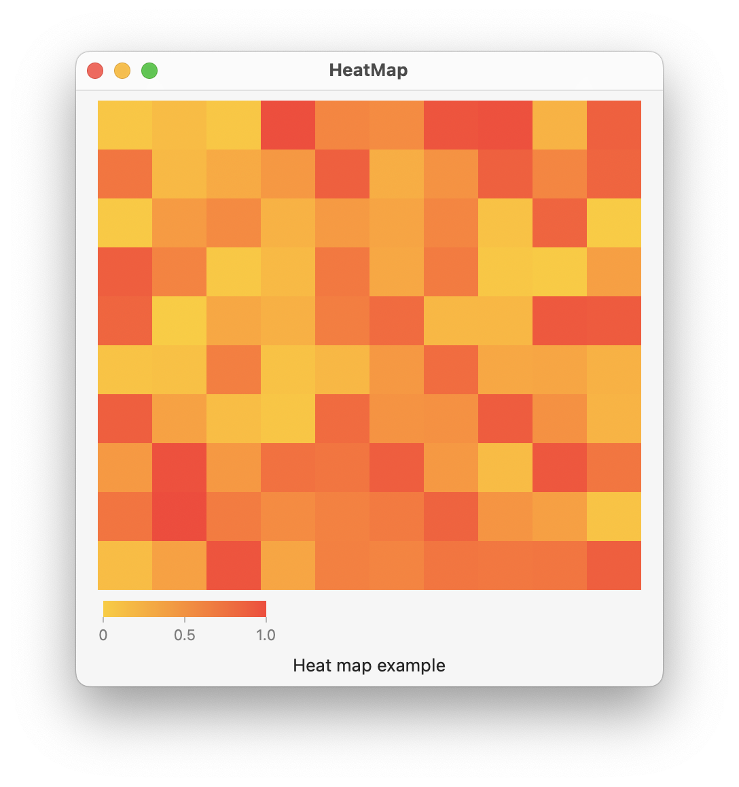

Use a RectangleMark() in a Swift Chart to create a 2D heat map of data. In this example, the data is represented using a Grid struct that contains an array of Point structs. The Point struct defines the x and y coordinate of the associated value. The x coordinate is a range based on the number of columns, the y coordinate is a range based on the number of columns, and the value is a random number from 0 to 1. Faint lines may appear on the chart if the frame size is not evenly divisible by the number of rows and columns defined by the Grid struct; this is likely caused by each RectangleMark() not perfectly aligning to the screen pixels.

import SwiftUI
import Charts
struct Point: Hashable, Identifiable {
let id = UUID()
let x: Int
let y: Int
let val: Float
}
struct Grid {
let rows: Int
let columns: Int
var points = [Point]()
init(rows: Int, columns: Int) {
self.rows = rows
self.columns = columns
generateData()
}
mutating func generateData() {
for i in 0..<rows {
for j in 0..<columns {
let v = Float.random(in: 0...1)
let point = Point(x: j, y: i, val: v)
points.append(point)
}
}
}
}
struct ContentView: View {
@State private var grid = Grid(rows: 10, columns: 10)
var body: some View {
VStack {
Chart(grid.points) { point in
RectangleMark(
xStart: .value("xStart", point.x),
xEnd: .value("xEnd", point.x + 1),
yStart: .value("yStart", point.y),
yEnd: .value("yEnd", point.y + 1)
)
.foregroundStyle(by: .value("Weight", point.val))
}
.chartYAxis(.hidden)
.chartXAxis(.hidden)
.chartForegroundStyleScale(range: Gradient(colors: [.yellow, .red]))
.frame(width: 400, height: 400)
Text("Heat map example")
}
.padding()
}
}
Gavin Wiggins © 2025
Made on a Mac with Genja. Hosted on GitHub Pages.